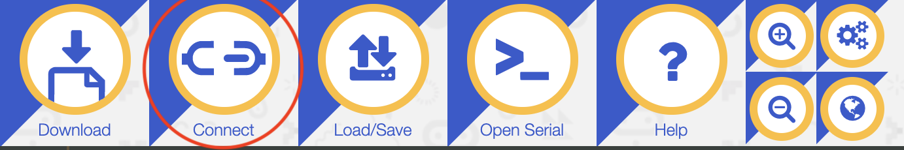

In today's class, we'll learn how to use Python to control our micro:bits. This is super awesome because it lets us do a few things:
- Learn basic Python.
- Practice the algorithmic thinking we used in Scratch by applying it to a different language.
- Explore more possibilities of the micro:bit.
Steps to access the CodeIt micro:bit Python classroom:
- Open the micro:bit classroom website here. You should arrive at a page that looks like:
- Select our classroom name elements from the list. Our classroom name is
- The "Classroom Name" section on your website should look like the image below.

- Enter the classroom PIN in the "PIN" section. Our PIN is 538143.
- Move onto the next page by pressing "Continue" and enter your name.
Set up your Python editor
- Press the "connect" tab and choose your micro:bit to connect it to the Python editor. You must be connected to the computer using a USB cord.
 - Flash the code onto your micro:bit to connect it. Do this by pressing the "flash" tab in the top left. This will only show up if your micro:bit is connected to the editor (from the step above).

- Now, you should be ready to code!
Remember how we had to import the micro:bit extension in Scratch in order to control it in our program? We have to do something similar in Python. At the top of every program that works with the micro:bit, you must include this line: from microbit import *.
Let's dissect what each part of this line means. In general, in Python, import tells the script to add a package; this is comparable to adding an extension in Scratch. Sometimes we use the line import [package], but in this case, we're using from [package] import. This is because we want to specify what we want to import from the package. In Python, using the asterisk in the import line, *, means "all." So what we're telling the program with from microbit import *, we're really saying, "take the microbit package and add all of its functions to my code."